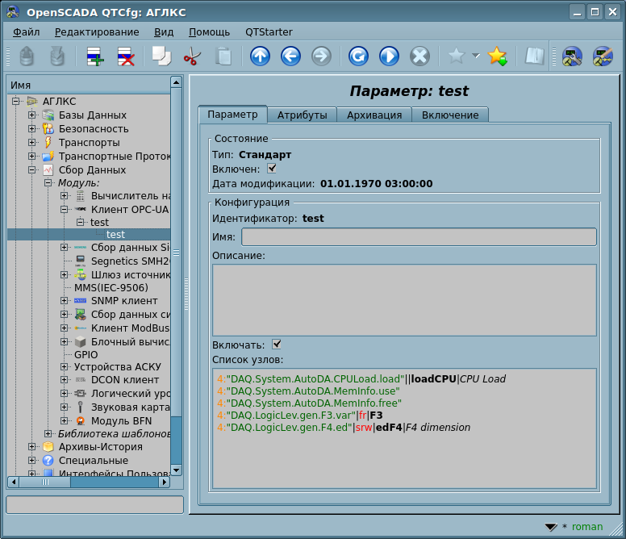

| Модуль |
Имя |
Версия |
Лицензия |
Источник |
Языки |
Платформы |
Тип |
Автор
|
| OPC_UA |
Клиент OPC-UA
|
2.5 |
GPL2 |
daq_OPC_UA.so |
en,uk,ru,de |
x86,x86_64,ARM
|
Сбор Данных |
Роман Савоченко
|
| Описание
|
| Предоставляет реализацию OPC-UA клиентского сервиса.
|
| OPC_UA |
Сервер OPC-UA
|
2.1 |
GPL2 |
daq_OPC_UA.so |
en,uk,ru,de |
x86,x86_64,ARM
|
Протокол |
Роман Савоченко
|
| Описание
|
| Предоставляет реализацию OPC-UA сервиса сервера.
|
| OPC_UA |
Библиотека реализации OPC-UA в OpenSCADA
|
2.1 |
LGPL3 |
libOPC_UA.{h,cpp} |
en |
x86,x86_64,ARM
|
Библиотека |
Роман Савоченко
|
| Описание
|
Предоставляет реализацию протокола OPC-UA в части клиента и сервера, в виде отдельной библиотеки.
- Общая трудоёмкость: > 50 ЧД[!]
- Спонсировано, 2 года ТП на 13 ЧД[!]: Дмитрий Лыков, ООО Вектор
- Спонсировано, перенос кода протокола в LGPL библиотеку, значительное улучшение и документирование на 8.4 ЧД[!]: Александр Леута, MYSCADA
- Спонсировано, работу с UAExpert 1.4 и kepware2 на 0.9 ЧД[!]: Устьянцев Михаил
- Спонсировано, работу с UAExpert 1.5, реализацию клиентского Publish и Chunks, значительную унификации, поддержки Логического Уровня и полную ревизию документа на 10.4 ЧД[!]: Фонд
- Задача расширения модуля
- Сделать (To Do):
- + отревизировать представительскую страницу документации;
- - разрешить противоречие в Client::messIO() на предмет смешивания режима чистого запроса с режимом свободного чтения/записи и времени ожидания тут ответа без прямой передачи таймаута подключения;
- + дополнить встроенным Логическим Режимом DAQ-Параметров;
- - добавить поддержку аутентификации к входной-серверной части протокола;
- - добавить автоматическое создание входных транспортов и их пре-конфигурацию из свойств объекта КонечногоУзла;
- + реализовать запрос-сервис "Publish" и "куски" в клиентской части;
- - глубоко пересмотреть сервис Publish на предмет потери пакетов и отправки запроса Republish;
- - добавить поддержку сервиса истории серверной части, смотря и тестируя совместно с обменом UAExpert;
- - добавить поддержку сервиса истории клиентской части.
|
OPC (OLE for Process Control) — это семейство протоколов и технологий, предоставляющих единый интерфейс для управления объектами автоматизации и технологическими процессами. Создание и поддержку спецификаций OPC координирует международная некоммерческая организация OPC Foundation, созданная в 1994 году ведущими производителями средств промышленной автоматизации.
В виду того, что значительное влияние в организации OPC Foundation имеет корпорация Microsoft, протоколы OPC до последнего времени были одноплатформенными и закрытыми, по причине привязки к закрытым технологиям MS Windows. Однако, с недавних пор, организацией OPC Foundation были созданы такие многоплатформенные решения, как OPC XML-DA и OPC-UA. Наибольший интерес из них представляет OPC-UA, как унифицирующий все протоколы ранних версий в рамках открытых и многоплатформенных технологий.
Данный модуль реализует поддержку интерфейса и протокола OPC-UA как в виде клиентского сервиса, так и в виде сервера OPC-UA. Клиентский сервис OPC-UA реализуется одноимённым модулем подсистемы "Сбор данных", а сервер реализуется модулем подсистемы "Протоколы". Весь код реализации этим модулем специфики протокола OPC-UA был вынесен, по просьбе пользователей, в отдельную библиотеку, которая распространяется под лицензией LGPL3.
Текущей версией данных модулей и библиотеки реализуются бинарная часть протокола и базовые сервисы в небезопасном режиме и безопасных режимах политик "Base128Rsa15" и "Base256". В последствии планируется реализация остальных сервисов OPC-UA, по потребности.
Хотя протокол OPC-UA и является многоплатформенным, его спецификация и SDK не являются свободнодоступными, а предоставляются только членам организации OPC Foundation. По этой причине реализация данных модулей столкнулась со значительными препятствиями и проблемами.
Во первых, протокол OPC-UA сложен и реализация его вообще без спецификации крайне трудоёмка. По этой причине работы над данными модулями долгое время не начиналась, и только благодаря спонсорской помощи одной из организаций-члена OPC Foundation, проект OpenSCADA получил документацию спецификации. При этом SDK и исходные тексты ANSIС-API протокола OPC-UA получены не были по причине несовместимости их лицензии с GPL и, как следствие, потенциальной угрозы нарушения лицензии при работе с исходными текстами, что могло привести к последующим юридическим проблемам при свободном распространении данных модулей.
Во вторых, даже наличие спецификации не позволяет решить ряд технических вопросов без примеров реализации и возможности проверки на рабочем прототипе клиента и сервера OPC-UA. Например, именно технические особенности реализации алгоритмов симметричного шифрования и получения ключей для них не позволили реализовать поддержку политик безопасности сразу.
Для отладки функционирования модулей использовалось демонстрационное ПО фирмы Unified Automation, в составе OPC-UA клиента — UAExpert и сервера — "OPC-UA Demo Server", из пакета SDK. В виду постоянного развития самого клиента "UAExpert", в плане интерпретации спецификации OPC-UA, новые его версии часто имеют проблемы при работе с сервером OPC-UA от OpenSCADA. В целом, результаты совместимости работы с клиентами и серверами различных производителей можно получить в таблице совместимости.
1 Протокол OPC-UA
OPC-UA — это платформо-независимый стандарт, с помощью которого системы и устройства различного типа могут взаимодействовать путём отправки сообщений между клиентом и сервером через различные типы сетей. Протокол поддерживает безопасное взаимодействие путём валидации клиентов и серверов, а также противодействия атакам. OPC-UA определяет понятие Сервисы, которые сервера могут предоставлять, а также сервисы, которые сервер поддерживает для клиента. Информация передаётся в виде типов данных, определённых OPC-UA и производителем, кроме того сервера определяют объектную модель, для которой клиенты могут осуществлять динамический обзор.
OPC-UA предоставляет совмещение интегрированного адресного пространства и сервисной модели. Это позволяет серверу интегрировать данные, нарушения (Alarms), события (Events) и историю в этом адресном пространстве, а также предоставлять доступ к ним посредством интегрированных сервисов. Сервисы также предоставляют интегрированную модель безопасности.
OPC-UA позволяет серверам предоставлять для клиентов определения типов, для доступа к объектам из адресного пространства. OPC-UA допускает предоставление данных в различных форматах, включая бинарные структуры и XML-документы. Через адресное пространство клиенты могут запросить у сервера метаданные, которые описывают формат данных.
OPC-UA добавляет поддержку множественной связности между узлами вместо простого ограничения иерархичностью. Такая гибкость, в комбинации с определением типов, позволяет применять OPC-UA для решения задач в широкой проблемной области.
OPC-UA спроектирован для обеспечения надёжной выдачи данных. Основная особенность всех OPC серверов — способность выдавать данные и события.
OPC-UA спроектирован для поддержки широкого диапазона серверов, от простых ПЛК до промышленных серверов. Эти сервера характеризуются широким спектром размеров, производительности, платформ исполнения и функциональной ёмкости. Следовательно, OPC-UA определяет исчерпывающее множество возможностей и сервер может имплементировать подмножества этих возможностей. Для обеспечения совместимости, OPC-UA определяет подмножества, именуемые Профилями, которые сервера могут указывать для согласования. Клиенты могут в последствии выполнять обзор профилей сервера и пробрасывать взаимодействие с сервером, основанном на профилях.
OPC-UA спецификация спроектирована как ядро в слое, изолированном от подлежащих компьютерных технологий и сетевых транспортов. Это позволяет OPC-UA, при необходимости, расширяться на будущие технологии без отторжения основы дизайна. На данный момент, спецификацией определены два способа кодирования данных: UA Binary и XML/text. Дополнительно определено два типа транспортного слоя: TCP и HTTP/SOAP.
OPC-UA спроектирован как решение для миграции с OPC клиентов и серверов, которые основаны на Microsoft COM технологиях. OPC COM сервера (DA, HDA и A&E) могут быть легко отражены в OPС-UA. Производители могут самостоятельно осуществлять такую миграцию или же рекомендовать пользователям использовать обёртки и конвертеры между этими протоколами. OPC-UA унифицирует предыдущие модели в едином адресном пространстве с единым множеством сервисов.
2 Модуль реализации протокола
Модуль сервера содержит код реализации серверной части OPC-UA — серверных сервисов (Рис.1), в части специфичной для OpenSCADA, и используя библиотеку для OPC-UA специфичной части. Для построения OPC-UA сервера достаточно создать входящий транспорт, обычно это TCP-транспорт модуля Sockets, и выбрать в нём модуль данного протокола, а также сконфигурировать хотя бы один конечный узел модуля протокола, о чём ниже.
Рис.1. Общее состояние "Сервера".
Общее состояние Сервера содержит только перечень активных каналов безопасности.
2.1 Обслуживание запросов по протоколу OPC-UA
Входящие запросы к модулю-протоколу обрабатываются модулем в соответствии со сконфигурированными конечными узлами OPC-UA (EndPoints) (рис.2).
Рис.2. Конечные узлы протокола.
Конечный узел протокола OPC-UA это фактически объект сервера OPC-UA. Конечные узлы в OPC-UA могут быть как локальными, так и удалёнными. Локальные конечные узлы предназначены для предоставления ресурсов станции OpenSCADA по протоколу OPC-UA, в тоже время удалённые конечные узлы служат для выполнения как сервиса обзора доступных OPC-UA узлов, так и для шлюзования запросов к удалённым станциям. В данной версии модуля поддерживается только конфигурация локальных конечных узлов.
Общая конфигурация конечного узла осуществляется на главной вкладке страницы конечного узла (рис.2) параметрами:
- Состояние узла, а именно: общий статус, перечень активных сеансов и подписок, "Включен" и имя БД, содержащей конфигурацию.
- Идентификатор, имя и описание узла.
- Состояние, в которое переводить узел при загрузке: "Включен".
- Тип кодирования протокола, на данный момент это только "Бинарный".
- URL конечной точки.
- Сертификат сервера и приватный ключ в формате PEM.
 Спрятано во включенном состоянии.
Спрятано во включенном состоянии.
- Политики безопасности сервера.

Рис.3. Главная вкладка страницы конечного узла.
3 Модуль сбора данных
Модуль сбора данных предоставляет возможность опроса и записи атрибутов значения(13) узлов типа "Переменная" в режиме прямого опроса запросом "Read" и асинхронным сервисом запроса "Publish".
3.1 Объект контроллера
Для добавления источника данных OPC-UA создаётся и конфигурируется объект контроллера в OpenSCADA. Пример вкладки конфигурации объекта контроллера данного типа изображен на рисунке 4.

Рис.4. Вкладка конфигурации объекта контроллера OPC-UA.
С помощью этой вкладки можно установить:
- Состояние контроллера, а именно: детализированный общий статус, "Включен", "Исполнение" и имя БД, содержащей конфигурацию.
- Идентификатор, имя и описание контроллера.
- Состояние, в которое переводить контроллер при загрузке: "Включен" и "Исполнение".
- Имя таблицы для хранения конфигурации параметров контроллера.
- Политика планирования и приоритет задачи сбора данных.
- Период синхронизации конфигурации атрибутов параметров с удалённой станцией, а также время повтора попыток восстановления подключения.
- URL конечного узла удалённой станции — сервера OPC-UA. Вначале этот адрес можно указать в виде "opc.tcp://{IP|name}:{port}", после чего, в случае включения объекта контроллера и наличия указанного OPC-UA узла, появится возможность выбрать уточнённый адрес.
- Часто встречается ситуация, когда уточнённый адрес является символьным, который в этой сети не резолвится, из-за некорректной настройки сервера. В таких случаях нужно оставить исходный IP-адрес или имя которое резолвится в IP правильно.
- Политика безопасности и режим безопасности сообщения.
- Сертификат клиента и приватный ключ в формате PEM.
- Спрятано в состоянии исполнения.
- Пользователь и пароль для аутентификации на сервере, пустое значение включает анонимный доступ.
- Использовать функцию "Read", иначе активируется и используется сервис сбора данных Publish (асинхронный) протокола OPC-UA.
С целью облегчения идентификации узлов на удалённой станции, а также выбора их для вставки в объекте параметра контроллера, в самом объекте контроллера предусмотрена вкладка навигации по узлам удалённой станции "Обзор узлов сервера", где можно пройти по дереву объектов и ознакомится с их атрибутами (рис.5).

Рис.5. Вкладка "Обзор узлов сервера" страницы объекта контроллера OPC-UA.
3.2 Параметры
Модуль сбора данных предоставляет два типа параметра: "Стандартный (std)" и "Логический (logic)". Дополнительными конфигурационными полями параметров данного модуля являются:
- Стандартный (std):
- Перечень атрибутов — содержит структурированный список конфигурации атрибутов ModBUS.
- Логический (logic):
- Шаблон параметра — адрес шаблона параметра DAQ.
3.2.1 Стандартный (std)
Дополнительным конфигурационным полем параметра данного модуля (рис.6) является перечень узлов OPC-UA и поле однострочной навигации по узлам OPC-UA для вставки выбранных узлов типа "Переменная" в указанный перечень. Атрибут в этом перечне записывается как "{ns}:{id}[|[{flg}][|{id}[|{name}]]]".
Где:
- ns — область имён, числом; нулевое значение может быть опущено;
- id — идентификатор узла, числом, строкой, строкой байт или GUID;
- flg — флажки неосуществления запроса целевых данных на сервере: тип значения (b-Логический,i-Целое,f-Вещественное,s-Строка,o-Объект), режим чтения/записи (r-чтение, w-запись);
- id — идентификатор создаваемого атрибута;
- name — имя создаваемого атрибута.
Примеры:
- 84 — корневой узел;
- 3:"BasicDevices2"||var — узел базовых устройств в области имён 3 и в виде строки с прямым ИД атрибута;
- 4:"61626364"||var|Variable — узел в области имён 4 и в виде строки байт с прямым ИД и названием атрибута;
- 4:{40d95ab0-50d6-46d3-bffd-f55639b853d4}|irw|var|Variable — узел в области имён 4 и в виде GUID с неосуществлением запроса целевых данных на предмет Целого Чтения-Записи и прямым ИД и названием атрибута.
 Рис.6. Вкладка конфигурации объекта параметра OPC-UA.
Узлы типа "Переменная" со значением в виде структуры прочитать целиком обычно нельзя поэтому необходимо её элементы вставлять в перечень узлов чтения отдельно.
Согласно указанного списка узлов выполняется опрос и создание атрибутов параметра (рис.7).
Рис.7. Вкладка атрибутов параметра.
3.2.2 Логический (logic)
Главная страница конфигурации параметра логического типа представлена на рисунке 8.
Рис.8. Вкладка конфигурации параметра логического типа.
Значение ссылки при конфигурации шаблона (рис.9) записывается в форме "{ns}:{id}".
Где:
- ns — область имён, числом; нулевое значение может быть опущено;
- id — идентификатор узла, числом, строкой, строкой байт или GUID.
Примеры:
- 84 — корневой узел;
- 3:"BasicDevices2" — узел базовых устройств в области имён 3 и в виде строки;
- 4:"61626364" — узел в области имён 4 и в виде строки байт;
- 4:{40d95ab0-50d6-46d3-bffd-f55639b853d4} — узел в области имён 4 и в виде GUID.

Рис.9. Вкладка "Конфигурация шаблона" параметра логического типа.
Модулем предусмотрена особая обработка ряда атрибутов шаблона:
- f_frq — частота вычисления процедуры шаблона или время после последнего вычисления (отрицательное в секундах) для планирования по CRON, только чтение.
- f_start — флаг первого выполнения процедуры шаблона — запуск, только чтение.
- f_stop — флаг последнего выполнения процедуры шаблона — останов, только чтение.
- f_err — ошибка параметра, полный доступ. Значение этого атрибута шаблона попадает в атрибут ошибки параметра "err". Записать сюда EVAL для возможности установки извне атрибута "err" и всех других в режиме Только для Чтения.
- SHIFR — значение шифра параметра, только чтение.
- NAME — значение имени параметра, только чтение.
- DESCR — значение описания параметра, только чтение.
- this — объект данного параметра, позволяет получить доступ к атрибутам параметра, например, для доступа к архивам-истории.
В соответствии с шаблоном, лежащим в основе параметра, мы получаем набор атрибутов параметра (рис.10).
Рис.10. Вкладка атрибутов параметра логического типа.
3.3 API пользовательского программирования
В виду поддержки параметров логического типа, имеет смысл предоставление ряда функций пользовательского API для их вызова из шаблона логического параметра.
Объект "Параметр" [this]
- bool attrAdd( string id, string name, string tp = "real", string selValsNms = "" ) [для включенного параметра логического типа] — добавление атрибута id с именем name и типом tp. Если атрибут уже присутствует то будут применены свойства, которые возможно изменить "на ходу": имя, режим выбора и параметры выбора.
- id, name — идентификатор и имя нового атрибута;
- tp — тип атрибута [boolean | integer | real | string | text | object] + режим выбора [sel | seled] + только для чтения [ro];
- selValsNms — две строки со значениями в первой и их именами во второй, разделённые ";".
- bool attrDel( string id ) [для включенного параметра логического типа] — удаление атрибута id.
4 Библиотека libOPC_UA
Основываясь на наработках данного модуля, протокольный код OPC-UA был вынесен в отдельную библиотеку и опубликован под лицензией LGPLv3. Данные действия выполнены с целью предоставить возможность простого добавления поддержки протокола OPC-UA сторонними проектами. Библиотека представлена двумя файлами libOPC_UA.h, libOPC_UA.cpp; поддерживается и содержится в составе данного модуля, т.е. актуальную версию Вы можете загрузить здесь: http://oscada.org/svn/trunk/OpenSCADA/src/moduls/daq/OPC_UA/libOPC_UA.
Библиотека, как и данный модуль, написан на языке программирования C++. Статическая диаграмма классов, отражающая архитектуру библиотеки, приведена на рисунке 11. Согласно диаграмме классов, библиотека выполнена в области имён "OPC", а архитектурно её можно разделить на клиентскую "Client" и серверную "Server" части, которые унаследованы от общего класса протокола "UA". Кроме непосредственно классов протокола "OPC-UA" библиотека включает в себя набор функций и классов для обработки или хранения данных протокола, отдельно из которых нужно отметить класс узла языка XML "XML_N", используемый для унификации обращений к API библиотеки.

Рис.11. Статическая диаграмма классов библиотеки libOPC_UA.
Использование библиотеки в целом заключается в наследовании от класса "Client" и/или "Server" согласно с функциями конечной программы и последующей реализации виртуальных функций свойств клиента/сервера в контексте протокола OPC-UA, а также транспортной части коммуникации, т.е. — подключение/открытие TCP-сокета и передачу/чтение неструктурированного потока данных. Последующие запросы, и обработка запросов данных (для сервера), осуществляются через вызов функции запроса сервису reqService() и/или обработки виртуальной функции запроса данных reqData(), т.е., по сути, интеграция в модель данных приложения.
После добавления к клиенту поддержки асинхронного сервиса опроса данных сервисом "Publish", процесс интеграции дополнился периодическим вызовом функции Client::poll() с целью обработки асинхронного сервиса. Функция Client::poll() также обеспечена поддержкой синхронного режима работы, отдельным аргументом, через унифицированную инфраструктуру подписки-регистрации элементов мониторинга, но функцией "Read". Т.е., на данный момент достаточно зарегистрировать все элементы мониторинга функцией Client::Subscr::monitoredItemAdd() а потом вызывать функцию Client::poll() для получения их данных в нужном режиме.
После последнего пересмотра кода в версии 2, интеграция серверной части дополнительно нуждается в обязательном запуске отдельного потока обработки всех подписок, с вызовом из него функции Server::EP::subScrCycle() и аргументом счётчика циклов обработки подписок — периодичность вызова Server::EP::subscrProcPer().
4.1 Служебные объекты, функции и класс UA
4.1.1 Данные
Типы реализаций (enum — SerializerType):
- ST_Binary = 0 — бинарный.
Типы запроса открытия канала безопасности (enum — SC_ReqTP):
- SC_ISSUE = 0 — вызывающий;
- SC_RENEW = 1 — обновляющий.
Режимы безопасности сообщения (enum — MessageSecurityMode):
- MS_None = 1 — без безопасности;
- MS_Sign = 2 — подпись;
- MS_SignAndEncrypt = 3 — подпись и шифрование.
Типы аутентификации (enum — AuthTp):
- A_Anon = 0 — анонимно;
- A_UserNm = 1 — пользователь+пароль;
- A_Cert = 2 — сертификат.
Классы узлов (enum — NodeClasses):
- NC_Object = 1 — объект;
- NC_Variable = 2 — переменная;
- NC_Method = 4 — метод;
- NC_ObjectType = 8 — тип объекта;
- NC_VariableType = 16 — тип переменной;
- NC_ReferenceType = 32 — тип ссылки;
- NC_DataType = 64 — тип данных;
- NC_View = 128 — вид.
Направления обзора (enum — BrowseDirection):
- BD_FORWARD = 0 — вперёд;
- BD_INVERSE = 1 — назад;
- BD_BOTH = 2 — вперёд и назад.
Возвратная метка времени (enum — TimestampsToReturn):
- TS_SOURCE = 0 — источника;
- TS_SERVER = 1 — сервера;
- TS_BOTH = 2 — источника и сервера;
- TS_NEITHER = 3 — отсутствует.
Доступ (enum — Access):
- ACS_Read = 0x01 — чтение;
- ACS_Write = 0x02 — запись;
- ACS_HistRead = 0x04 — чтение истории;
- ACS_HistWrite = 0x08 — запись истории;
- ACS_SemChange = 0x10 — ?.
Элементы маски описания обзорного запроса (enum — RefDscrResMask):
- RdRm_RefType = 0x01 — тип ссылки;
- RdRm_IsForward = 0x02 — направление;
- RdRm_NodeClass = 0x04 — класс узла;
- RdRm_BrowseName = 0x08 — имя обзора;
- RdRm_DisplayName = 0x10 — имя отображения;
- RdRm_TypeDef = 0x20 — тип определения.
Идентификаторы атрибутов узла (enum — AttrIds):
- Aid_Error = 0 — ошибка;
- AId_NodeId = 1 — идентификатор узла;
- AId_NodeClass = 2 — класс узла;
- AId_BrowseName = 3 — имя обзора;
- AId_DisplayName = 4 — имя отображения;
- AId_Descr = 5 — описание;
- AId_WriteMask = 6 — маска записи;
- AId_UserWriteMask = 7 — маска записи пользователя;
- AId_IsAbstract = 8 — абстрактность;
- AId_Symmetric = 9 — симметричность;
- AId_InverseName = 10 — инверсное имя;
- AId_ContainsNoLoops = 11 — отсутствие петель;
- AId_EventNotifier = 12 — уведомление событий;
- AId_Value = 13 — значение;
- AId_DataType = 14 — тип данных;
- AId_ValueRank = 15 — ранг значения;
- AId_ArrayDimensions = 16 — размерность массива;
- AId_AccessLevel = 17 — уровень доступа;
- AId_UserAccessLevel = 18 — уровень доступа пользователя;
- AId_MinimumSamplingInterval = 19 — минимальный интервал измерений;
- AId_Historizing — архивирование;
- AId_Executable — исполняемый;
- AId_UserExecutable — исполняемый пользователем.
Состояния подписки (enum — SubScrSt):
- SS_CUR = 0 — текущее (не менять командой);
- SS_CLOSED = 1 — закрыто;
- SS_CREATING = 2 — создание;
- SS_NORMAL = 3 — нормальный;
- SS_LATE = 4 — запоздалый;
- SS_KEEPALIVE = 5 — сохранение живым.
Режимы мониторинга (enum — MonitoringMode):
- MM_CUR = -1 — текущее (не менять командой);
- MM_DISABLED = 0 — отключено;
- MM_SAMPLING = 1 — измерение;
- MM_REPORTING = 2 — отчётность.
4.1.2 Внешние функции
В библиотеку включен ряд внешних функций объекта TSYS ядра OpenSCADA для упрощения и унификации ряда внутренних операций:
- int64_t curTime( clockid_t clc = CLOCK_REALTIME ); — Текущее время в микросекундах для счетчика clc, с начала эпохи Unix (01.01.1970) для CLOCK_REALTIME.
- string int2str( int val ); — Преобразование целого знакового в строку в десятичном представлении.
- int str2int( const string &val ); — Преобразование значения строки val в десятичном, шестнадцатеричном или восьмеричном представлении в целое знаковое.
- string uint2str( unsigned val ); — Преобразования целого беззнакового в строку в десятичном представлении.
- unsigned long str2uint( const string &val ); — Преобразование значения строки val в десятичном, шестнадцатеричном или восьмеричном представлении в целое беззнаковое.
- string ll2str( int64_t val ); — Преобразования длинного целого (64бит) в строку в десятичном представлении.
- string real2str( double val, int prec = 15, char tp = 'g' ); — Преобразования вещественного с точностью prec знаков и типом tp в строку.
- double str2real( const string &val ); — Преобразование значения строки val в вещественное.
- string strParse( const string &path, int level, const string &sep, int *off = NULL, bool mergeSepSymb = false ); — Разбор строки path на составляющие, отделённые разделителем sep, объединяя односимвольные mergeSepSymb, начиная со смещения off и контролируя смещение конца элемента в нём же.
- string strLine( const string &str, int level, int *off = NULL ); — Разбор многострочного текста на отдельные строки, начиная со смещения off и контролируя смещение конца элемента в нём же.
- string strMess( const char *fmt, ... ); — Формирование стоки по шаблону fmt и аргументам, реализовано на основе "sprintf".
4.1.3 Объект автоматического разблокирования POSIX мютекса для OPC (OPCAlloc)
Этот объект управления мютексом является копией объекта "MtxAlloc" для ядра OpenSCADA.
Публичные методы:
- OPCAlloc( pthread_mutex_t &iM, bool ilock = false ); — Инициализация объекта автоматического разблокирования мютекса iM, созданного ранее, с блокированием при создании по lock.
- int lock( ); — Захват ресурса, возврат нуля при успешном выполнении.
- int unlock( ); — Освобождение ресурса, возврат нуля при успешном выполнении.
- int tryLock( ); — Проба захвата ресурса без ожидания освобождения, возврат нуля при успешном выполнении.
4.1.4 Ошибка OPC (OPCError)
Объект ошибки "OPCError" является урезанной копией объекта TError ядра OpenSCADA.
Публичные методы:
- OPCError( const char *fmt, ... ); — Конструктор типовой ошибки без кода.
- OPCError( int cod, const char *fmt, ... ); — Конструктор типовой ошибки с кодом ошибки.
Публичные атрибуты:
- int cod; — Код ошибки.
- string mess; — Текст ошибки.
4.1.5 XML-тег (XML_N)
Объект "XML_N" является урезанной копией объекта XMLNode ядра OpenSCADA.
Публичные методы:
- XML_N( const string &name = "" ); — Инициализация тега с именем name.
- XML_N( const XML_N &nd ); — Копирующий конструктор.
- XML_N &operator=( const XML_N &prm ); — Копирование ветки XML-дерева из prm.
- string name( ) const; — Имя тега.
- XML_N* setName( const string &s ); — Установка имени тега в s.
- string text( bool childs = false, bool recursive = false ) const; — Текст тега, childs — для получения текста из специализированных узлов текста.
- XML_N* setText( const string &s, bool childs = false ); — Установка текста тега в s, childs — для установки текста в специализированный узел текста.
- void attrList( vector<string> & list ) const; — Список атрибутов list в теге.
- XML_N* attrDel( const string &name ); — Удаление атрибута name.
- void attrClear( ); — Очистка атрибутов тега.
- string attr( const string &name, bool caseSens = true ) const; — Получение атрибута name.
- XML_N* setAttr( const string &name, const string &val ); — Установка/создание атрибута name со значением val.
- XML_N* clear( ); — Очистка тега (рекурсивно, включая все вложения).
- bool childEmpty( ) const; — Проверка на отсутствие вложенных тегов.
- unsigned childSize( ) const; — Количество вложенных тегов.
- void childAdd( XML_N *nd ); XML_N* childAdd( const string &name = "" ); — Добавление вложенного тега.
- int childIns( unsigned id, XML_N *nd ); — Вставка вложенного тега nd в позицию id, отрицательное значение id отсчитывает с конца.
- XML_N* childIns( unsigned id, const string &name = "" ); — Вставка вложенного тега с именем name в позицию id, отрицательное значение id отсчитывает с конца.
- void childDel( const unsigned id ); — Удаление вложенного тега id, отрицательное значение id отсчитывает с конца.
- void childDel( XML_N *nd ); — Удаление вложенного тега по его адресу nd.
- XML_N* childClear( const string &name = "" ); — Очистка вложенного тега name.
- XML_N* childGet( const int, bool noex = false ) const; — Получение вложенного тега по порядковому номеру.
- XML_N* childGet( const string &name, const int numb = 0, bool noex = false ) const; — Получение вложенного numb порядкового тега по имени тега name, noex указывает на запрет генерации исключения в случае отсутствия тега.
- XML_N* childGet( const string &attr, const string &name, bool noex = false ) const; — Получение вложенного тега по значению name атрибута attr, noex указывает на запрет генерации исключения в случае отсутствия тега.
- XML_N* getElementBy( const string &attr, const string &val ); — Поиск вложенного узла по значению val атрибута attr.
- XML_N* parent( ); — Родительский тег данного тега.
- XML_N* root( ); — Корневой тег данного тега.
4.1.6 Объект узла OPC-UA (NodeId)
Данные:
Типы данных (enum — NodeId::Type):
- NodeId::Numeric — номер.
- NodeId::String — строка.
- NodeId::Guid — глобальный уникальный идентификатор.
- NodeId::Opaque — opaque.
Публичные методы:
- NodeId( uint32_t n, uint16_t ns = 0 ); — Численный инициирующий конструктор для числа n в области имён ns.
- NodeId( const string &str, uint16_t ns = 0, Type tp = String ); — Строковый инициирующий конструктор для строки str в области имён ns с типом tp.
- NodeId( const NodeId &node ); — Копирующий конструктор объекта.
- NodeId( ); — Деструктор.
- bool operator==( const NodeId &node ); — Сравнение объектов.
- NodeId &operator=( const NodeId &node ); — Копирование объекта.
- Type type( ) const; — Тип узла.
- bool isNull( ) const; — Узел нулевой — неинициализированный.
- uint16_t ns( ) const; — Область имён.
- uint32_t numbVal( ) const; — Числовое значение.
- string strVal( ) const; — Строковое значение.
- void setNs( uint16_t ns ); — Установка области имён в ns.
- void setNumbVal( uint32_t n ); — Установка числового значения n.
- void setStrVal( const string &str, Type tp = String ); — Установка строкового значения str с типом tp.
- static NodeId fromAddr( const string &strAddr ); — Формирование объекта узла из адреса strAddr.
- string toAddr( ) const; — Получение адреса объекта узла.
4.1.7 Корневой объект протокола OPC-UA (UA)
Публичные методы:
- virtual string lang2CodeSYS( ); — Двух-символьный код языка окружения.
- virtual void debugMess( const string &mess ) — Размещение отладочных сообщений.
- virtual uint32_t rcvBufSz( ); — Размер буфера приёмника, больше 8192.
- virtual uint32_t sndBufSz( ); — Размер буфера передатчика, больше 8192.
- virtual uint32_t msgMaxSz( ); — Максимальный размер сообщения, 0 для отсутствия ограничения.
- virtual uint32_t chunkMaxCnt( ); — Максимальное количество кусков, 0 для отсутствия ограничения.
- static string iErr( const string &buf, int &off ); — Чтение ошибки из потока buf по смещению off.
- static const char *iVal( const string &buf, int &off, char vSz ); — Чтение значения размером vSz из потока buf по смещению off, как участок данных.
- static int64_t iN( const string &rb, int &off, char vSz ); — Чтение знакового целого размером vSz (1, 2, 4, 8) из потока rb по смещению off.
- static uint64_t iNu( const string &rb, int &off, char vSz ); — Чтение беззнакового целого размером vSz (1, 2, 4, 8) из потока rb по смещению off.
- static double iR( const string &rb, int &off, char vSz = 4 ); — Чтение вещественного размером vSz (4, 8) из потока rb по смещению off.
- static string iS( const string &buf, int &off ); — Чтение строки из потока buf по смещению off.
- static string iSl( const string &buf, int &off, string *locale = NULL ); — Чтение локализованной locale строки из потока buf по смещению off.
- static string iSqlf( const string &buf, int &off, uint16_t *nsIdx = NULL ); — Чтение строки с квалификатором nsIdx из потока buf по смещению off.
- static int64_t iTm( const string &buf, int &off ); — Чтение времени из потока buf по смещению off, с преобразованием в эпоху UNIX.
- static NodeId iNodeId( const string &buf, int &off ); — Чтение идентификатора узла из потока buf по смещению off.
- static string iVariant( const string &buf, int &off, uint8_t *tp = NULL ); — Чтение типа вариант из потока buf по смещению off, возвращает вариант в строковом виде для типа tp.
- static void iDataValue( const string &buf, int &off, XML_N &nVal ); — Чтение комплексного значения (структура DataValue) в nVal из потока buf по смещению off.
- static void oN( string &buf, int64_t val, char sz, int off = -1 ); — Запись знакового целого val размером sz (1, 2, 4, 8) в поток buf по смещению off.
- static void oNu( string &buf, uint64_t val, char sz, int off = -1 ); — Запись беззнакового целого val размером sz (1, 2, 4, 8) в поток buf по смещению off.
- static void oR( string &buf, double val, char sz = 4 ); — Запись вещественного val размером sz (4, 8) в поток buf по смещению off.
- static void oS( string &buf, const string &val, int off = -1 ); — Запись строки val в поток buf по смещению off.
- static void oSl( string &buf, const string &val, const string &locale = "" ); — Запись локализованной locale строки val в поток buf по смещению off.
- static void oSqlf( string &buf, const string &val, uint16_t nsIdx = 0 ); — Запись строки val с квалификатором nsIdx в поток buf по смещению off.
- static void oTm( string &buf, int64_t val ); — Запись времени val (в эпохе UNIX) в поток buf по смещению off.
- static void oNodeId( string &buf, const NodeId &val ); — Запись идентификатора узла val в поток buf по смещению off.
- static void oRef( string &buf, uint32_t resMask, const NodeId &nodeId, const NodeId &refTypeId, bool isForward, const string &name, uint32_t nodeClass, const NodeId &typeDef ); — Запись в поток buf описателя обзора (структура ReferenceDescription) для маски результата resMask, узла nodeId, типа ссылки refTypeId, направления isForward, имени name, класса узла nodeClass, типа определения typeDef.
- void oDataValue( string &buf, uint8_t eMsk, const string &vl, uint8_t vEMsk = 0, int64_t srcTmStmp = 0 ); — Запись комплексного значения (структура DataValue) в поток buf для маски кодирования eMsk, значения vl, маски значения vEMsk, времени источника srcTmStmp.
- static string randBytes( int num ); — Генерация потока случайных данных в количестве num.
- static string certPEM2DER( const string &certPem ); — Преобразование сертификата из формата PEM certPem в формат DER.
- static string certDER2PEM( const string &certDer ); — Преобразование сертификата из формата DER certDer в формат PEM.
- static string certThumbprint( const string &certPem ); — Получение подписи из сертификата PEM certPem.
- static string asymmetricEncrypt( const string &mess, const string &certPem, const string &secPolicy ); — асимметричное кодирование потока сообщения mess сертификатом certPem (открытым ключом) для политики secPolicy.
- static string asymmetricDecrypt( const string &mess, const string &pvKeyPem, const string &secPolicy ); — Асимметричное декодирование потока сообщения mess ключом pvKeyPem для политики secPolicy.
- static bool asymmetricVerify( const string &mess, const string &sign, const string &certPem ); — Асимметричная верификация подписи sign сообщения mess сертификатом certPem.
- static string asymmetricSign( const string &mess, const string &pvPem ); — Получение асимметричной подписи закрытым ключом сертификата pvPem для сообщения mess.
- static int asymmetricKeyLength( const string &keyCertPem ); — Получение длины ключа сертификата keyCertPem.
- static string deriveKey( const string &secret, const string &seed, int keyLen ); — Извлечение ключа размером keyLen из секрета secret и seed.
- static string symmetricEncrypt( const string &mess, const string &keySet, const string &secPolicy ); — Симметричное шифрование потока сообщения mess ключом keySet для политики secPolicy.
- static string symmetricDecrypt( const string &mess, const string &keySet, const string &secPolicy ); — Асимметричное дешифрование потока сообщения mess ключом keySet для политики secPolicy.
- static string symmetricSign( const string &mess, const string &keySet, const string &secPolicy ); — Получение симметричной подписи ключом keySet для сообщения mess и политики secPolicy.
4.1.7.1 Включенный объект параметров безопасности (SecuritySetting)
Публичные данные:
- string policy — политика безопасности;
- MessageSecurityMode messageMode — режим сообщения.
Публичные методы:
- SecuritySetting( const string &plc, int8_t mMode ) — Конструктор объекта с политикой безопасности plc и режимом сообщения mMode.
- SecuritySetting( ) — Конструктор объекта с политикой безопасности "None" и режимом сообщения MS_None.
4.2 Основной объект Клиента (Client->UA)
Применение: Непосредственно наследуется пользовательским объектом — Клиент OPC-UA.
Публичные методы:
- virtual string applicationUri( ) = 0; — URI приложения.
- virtual string productUri( ) = 0; — URI продукта.
- virtual string applicationName( ) = 0; — Имя приложения.
- virtual string sessionName( ) = 0; — Имя сеанса.
- virtual string endPoint( ) = 0; — Конечная точка.
- virtual string secPolicy( ) = 0; — Политика безопасности.
- virtual int secMessMode( ) = 0; — Режим безопасности сообщения.
- virtual string cert( ) = 0; — Сертификат.
- virtual string pvKey( ) = 0; — Приватный ключ.
- virtual string authData( ) = 0; — Данные аутентификации:
- "<Empty>" — анонимный;
- "{User}\n{Password}" — по пользователю и паролю.
- virtual uint8_t publishReqsPool( ) — Количество Publish запросов обслуживания сервиса публикации, типично 2(два).
- virtual string poll( bool byRead = false ); — Функция обслуживания сервиса публикации на предмет: читания входного канала на предмет ответов публикации, отслеживания наличия необходимого количества Publish запросов и потери связи из-за отсутствия ответов публикаций в течении определённого времени жизни. Аргументом byRead функция также обеспечивает прямое чтение зарегистрированных элементов мониторингу запросом "Read".
- virtual int messIO( const char *oBuf, int oLen, char *iBuf = NULL, int iLen = 0 ) = 0; — обмен сообщениями, передача запроса и ожидание ответа.
- Смешанный режим запроса и свободного чтения/записи всё ещё решается.
- virtual bool connect( int8_t est = -1 ); — Получение статуса подключения, установка подключения для est = 1, отключение для est = 0.
- virtual void protIO( XML_N &io ); — Обработка запроса к протоколу.
- virtual void reqService( XML_N &io ); — Комплексный запрос сервиса, который сам отслеживает необходимость вызова вспомогательных запросов открытия/закрытия канала безопасности, открытия/закрытия/активации сеанса и другое.
Защищённые атрибуты:
- SClntSess sess; — данные сеанса;
- pthread_mutex_t mtxData; — замок доступа к данным.
4.2.1 Комплексный сеанс Клиента (Client::SClntSess)
Публичные данные:
- uint32_t servRcvBufSz, servSndBufSz, servMsgMaxSz, servChunkMaxCnt; — параметры буфера приёма, передачи, максимального размера сообщения и максимального количества кусков; которые получены от сервера запросом "HELLO";
- string endPoint; — конечная точка;
- XML_N endPointDscr; — описание активной конечной точки;
- uint32_t secChnl, secToken; — индекс и талон канала безопасности;
- int secLifeTime; — время жизни канала безопасности;
- bool secChnlChanged; — признак изменения канала безопасности для переподключения или повторной активации сеанса;
- uint32_t sqNumb, sqReqId, reqHndl; — номер последовательности, порядковый номер запроса и держатель запроса;
- string secPolicy; — политика безопасности;
- char secMessMode; — режим безопасности сообщения;
- int64_t secChnlOpenTm, secLstMessReqTm; — время открытия/обновления канала безопасности и последнего сообщения запроса;
- string sesId, authTkId; — идентификатор и талон аутентификации сеанса;
- double sesLifeTime; — время жизни сеанса;
- string servCert, servNonce, servKey; — сертификат, случайная последовательность и симметричный ключ сервера;
- string clKey; — симметричный ключ клиента;
- vector<Subscr> mSubScr; — подписки (объект Subscr) клиента;
- vector<uint32_t> mPublSeqs; — реестр отправленных запросов публикации по порядковому номеру запроса.
Публичные методы:
- void clearSecCnl( bool inclEP = false ) — Очистка канала безопасности, включая описание конечной точки inclEPdescr.
- void clearSess( bool inclSubscr = true ) — Очистка сеанса, включая подписки inclSubscr.
4.2.1.1 Подписка Клиента (Client::Subscr)
Публичные данные:
- bool publEn; — включить публикацию;
- double publInterval; — интервал публикации в миллисекундах;
- uint32_t subScrId; — идентификатор подписки: <НУЛЬ> — неактивный объект;
- uint32_t lifetimeCnt; — счётчик, за которого и отсутствия уведомлений, у клиента удаляется этот объект;
- uint32_t maxKeepAliveCnt; — счётчик, за которого необходимо отправлять пустой ответ публикации;
- uint32_t maxNtfPerPubl; — максимальное количество уведомлений в одном ответе Публикации;
- uint8_t pr; — приоритет;
- vector<MonitItem> mItems; — контейнер элементов мониторинга;
- vector<uint32_t> mSeqToAcq; — реестр последовательностей ответов Публикации, которые требуют подтверждения ближайшим запросом Публикации;
- int64_t lstPublTm; — время последнего ответа публикации;
- Client *clnt; — прямая ссылка на объект Клиента.
Публичные методы:
- Subscr( Client *clnt, double publInterval = 1e3 ); — Конструктор Подписки для Клиента clnt с интервалом публикации publInterval.
- bool isActivated( ); — Возвращает состояние активации подписки.
- void activate( bool vl, bool onlyLocally = false ); — Активирует (vl=TRUE) или деактивирует (vl=FALSE) Подписку. Активация предусматривает отправку запроса "CreateSubscription" с созданием зарегистрированных, но ещё не активированных элементов мониторинга, сервисным запросом "CreateMonitoredItems". Деактивация предусматривает отправку сервисного запроса "DeleteSubscriptions", если не установлено onlyLocally, с очисткой локальных данных элементов мониторинга.
- int monitoredItemAdd( const NodeId &nd, AttrIds aId = AId_Value, MonitoringMode mMode = MM_REPORTING ); — Добавляет узел nd на предмет атрибута aId, как элемент мониторинга в режиме мониторинга mMode, и возвращает идентификатор нового элемента. При активном состоянии Подписки также осуществляется сервисный запрос "CreateMonitoredItems". Спеціальное значение "0" узла nd предусматривает осуществление сервисного запроса "CreateMonitoredItems" для всех зарегистрированных и ещё не активированных элементов.
- void monitoredItemDel( int32_t mItId, bool localDeactivation = false, bool onlyNoData = false ); — Удаляет элемент мониторинга mItId, обозначая его как "СВОБОДНЫЙ" и осуществляя также сервисный вызов "DeleteMonitoredItems" для не localDeactivation. onlyNoData используется вместе с localDeactivation для только маркирования элемента как "НЕТ-ДАННЫХ" после некоторых ошибок подключения. Специальное значение "-1" элемента мониторинга mItId предусматривает осуществление деактивации всех элементов.
4.2.1.1.1 Элемент Мониторинга Подписки Клиента (Client::Subscr::MonitItem)
Публичные данные:
- MonitoringMode md; — режим мониторинга;
- NodeId nd; — целевой узел: <ПУСТО> — свободный элемент мониторинга;
- uint32_t aid; — ИД атрибута узла;
- double smplItv; — интервал измерения;
- uint32_t qSz; — размер очереди;
- bool active; — активность элемента;
- uint32_t st; — код состояния элемента;
- XML_N val; — контекст значения элемента: наличие атрибута "nodata" означает отсутствие данных.
Публичные методы:
- MonitItem( NodeId nd, uint32_t aid, MonitoringMode md = MM_REPORTING ); — Конструктор Элемента Мониторинга для узла nd и его атрибута aid в режиме мониторинга md.
4.3 Основной объект Сервера (Server->UA)
Применение: Прямо наследуется пользовательским объектом — Сервер OPC-UA.
Публичные методы:
- virtual bool debug( ); — Активирована отладка.
- virtual string applicationUri( ) = 0; — URI приложения.
- virtual string productUri( ) = 0; — URI продукта.
- virtual string applicationName( ) = 0; — Имя приложения.
- virtual uint32_t clientRcvBufSz( const string &inPrtId ) = 0; — Размер буфера приёмника, полученный от клиента, для подключения inPrtId.
- virtual uint32_t clientSndBufSz( const string &inPrtId ) = 0; — Размер буфера передатчика, полученный от клиента, для подключения inPrtId.
- virtual uint32_t clientMsgMaxSz( const string &inPrtId ) = 0; — Максимальный размер сообщения, полученный от клиента, для подключения inPrtId.
- virtual uint32_t clientChunkMaxCnt( const string &inPrtId ) = 0; — Максимальное количество кусков, полученное от клиента, для подключения inPrtId.
- virtual void discoveryUrls( vector<string> &ls ) = 0; — URLы серверов обзора в ls.
- virtual bool inReq( string &request, const string &inPrtId, string *answ = NULL ); — Обработчик входящих запросов request экземпляра протокола inPrtId и ответа в answ.
- virtual int writeToClient( const string &threadId, const string &data ) = 0; — Прямая запись подключенному клиенту.
- virtual string clientAddr( const string &threadId ) = 0; — Адрес клиента.
- virtual void clientRcvBufSzSet( const string &inPrtId, uint32_t vl ) = 0; — Установка размера буфера приёмника, полученного от клиента, в значение vl для подключения inPrtId.
- virtual void clientSndBufSzSet( const string &inPrtId, uint32_t vl ) = 0; — Установка размера буфера передатчика, полученного от клиента, в значение vl для подключения inPrtId.
- virtual void clientMsgMaxSzSet( const string &inPrtId, uint32_t vl ) = 0; — Установка максимального размера сообщения, полученного от клиента, в значение vl для подключения inPrtId.
- virtual void clientChunkMaxCntSet( const string &inPrtId, uint32_t vl ) = 0; — Установка максимального количества кусков, полученного от клиента, в значение vl для подключения inPrtId.
- int chnlSet( int cid, const string &ep, int32_t lifeTm = 0, const string& clCert = "", const string &secPolicy = "None", char secMessMode = 1, const string &clAddr = "", uint32_t seqN = 1 ); — Установка канала безопасности с идентификатором cid (ненулевое значение для обновления) для конечной точки ep, времени жизни lifeTm, клиентского сертификата clCert, политики безопасности secPolicy, режима безопасности сообщения secMessMode, адреса клиента clAddr, номера последовательности пакета seqN.
- void chnlClose( int cid ); — Закрытие канала безопасности cid.
- SecCnl chnlGet( int cid ); SecCnl &chnlGet_( int cid ); — Получение копии и доступа к объекту канала безопасности cid.
- void chnlSecSet( int cid, const string &servKey, const string &clKey ); — Установка для канала безопасности cid серверного servKey и клиентского clKey симметричных ключей.
- static string mkError( uint32_t errId, const string &err = "" ); — Формирование ошибки с идентификатором errId и сообщением err.
Защищённые методы:
- virtual void epEnList( vector<string> &ls ) = 0; — Обработчик запроса перечня конечных узлов.
- virtual EP *epEnAt( const string &ep ) = 0; — Обработчик запроса объекта конечной точки.
Защищённые атрибуты:
- pthread_mutex_t mtxData; — замок доступа к данным.
4.3.1 Канал Безопасности Сервера (Server::SecCnl)
Публичные методы:
- SecCnl( const string &ep, uint32_t tokenId, int32_t lifeTm, const string &clCert, const string &secPolicy, char secMessMode, const string &clAddr, uint32_t secN ); — Конструктор объекта Канала Безопасности для: конечной точки ep, талона безопасности tokenId, времени жизни lifeTm, клиентского сертификата clCert, политики безопасности secPolicy, режима безопасности сообщений secMessMode, адреса клиента clAddr, номера последовательности создания канала безопасности secN.
Публичные атрибуты:
- string endPoint; — конечная точка;
- string secPolicy; — политика безопасности;
- char secMessMode; — режим безопасности сообщения;
- int64_t tCreate; — время создание;
- int32_t tLife; — время жизни;
- uint32_t tokenId, tokenIdPrev; — текущий и предыдущий идентификаторы талона;
- string clCert, clAddr, clKey; — сертификат, адрес и симметричный ключ клиента;
- string servKey; — симметричный ключ сервера;
- uint32_t servSeqN, clSeqN, reqId; — текущий номер последовательности пакета сервера, клиента и запроса;
- int chCnt; — счётчик кусков пакета в аккумуляции;
- string chB; — аккумуляция пакета из кусков.
4.3.2 Сеанс Сервера (Server::Sess)
Публичные методы:
- Sess( const string &name, double tInact ); — Конструктор объекта Сеанса с именем name и таймаутом неактивности tInact.
- bool isSecCnlActive( EP *ep ); — Возвращает состояние активности Канала Безопасности, связанного с сеансом.
Публичные атрибуты:
- string name, inPrtId; — имя и идентификатор входного протокола;
- uint32_t secCnl; — канал безопасности, связанный с сеансом;
- double tInact; — время неактивности;
- int64_t tAccess; — время доступа;
- string servNonce; — случайная последовательность сервера;
- map<string, ContPoint> cntPnts; — точки продолжения запроса обзора;
- deque<string> publishReqs; — перечень запросов публикации.
4.3.2.1 Точка продолжения обзора Сеанса Сервера (Server::Sess::ContPoint)
Публичные методы:
- ContPoint( const string &brNode, const string &lstNode, uint32_t brDir, uint32_t refPerN, const string &refTypeId, uint32_t nClassMask, uint32_t resMask ) — Конструктор объекта для узла ветви продолжения обзора brNode, узла списка lstNode, направления обзора brDir, числа ссылок на узел refPerN, идентификатора ссылки refTypeId, маски класса узла nClassMask и маски результата resMask.
- bool empty( ) const; — Точка продолжения пуста.
Публичные атрибуты:
- uint32_t brDir, refPerN, nClassMask, resMask; — направление обзора, число ссылок на узел, маска класса узла, маска результата;
- string brNode, lstNode, refTypeId; — ветвь узлов, список узла и идентификатор типа ссылки.
4.3.3 Подписка Сервера (Server::Subscr)
Публичные методы:
- Subscr copy( bool noWorkData = true ); — Копия объекта подписки, без рабочих данных для noWorkData.
- SubScrSt setState( SubScrSt st = SS_CUR ); — Возврат текущего состояния и установка в st.
Публичные атрибуты:
- SubScrSt st; — статус подписки;
- int sess; — сеанс подписки;
- bool publEn; — включение публикации;
- bool toInit; — признак инициации подписки — отправка первого-пустого пакета ответа публикации;
- double publInterv; — интервал публикации, миллисекунд;
- uint32_t seqN; — номер последовательности для ответов, заворачивается через 1, не инкрементируется на KeepAlive сообщениях;
- uint32_t pubCntr, pubCntr_; — счётчик отправки ответов публикации для выявления активности;
- uint32_t lifetimeCnt, wLT; — счётчик, по исчерпанию которого в течении отсутствия уведомления от клиента необходимо удалять данный объект;
- uint32_t maxKeepAliveCnt, wKA; — счётчик, по исчерпанию которого нужно отправлять пустой ответ публикации и устанавливать StatusChangeNotification в Bad_Timeout;
- uint32_t maxNtfPerPubl; — максимальное количество уведомлений на один ответ публикации;
- uint8_t pr; — приоритет;
- vector<MonitItem> mItems; — перечень элементов мониторинга;
- deque<string> retrQueue; — очередь перепосылки; используется запросом перепосылки "RePublish"; очищается на глубину согласно KeepAlive или прямым запросом публикации в наборе подтверждения.
4.3.3.1 Элемент Мониторинга Подписки Сервера (Server::Subscr::MonitItem)
Публичные атрибуты:
- MonitoringMode md; — режим мониторинга;
- NodeId nd; — целевой узел;
- uint32_t aid; — идентификатор атрибута узла;
- TimestampsToReturn tmToRet; — метки времени для возврата;
- double smplItv; — интервал измерений;
- uint32_t qSz; — размер очереди;
- bool dO; — отбрасывать старые;
- uint32_t cH; — указатель клиента;
- XML_N fltr; — фильтр;
- int vTp; — тип значений;
- int64_t dtTm; — время последнего значения;
- deque<Val> vQueue; — очередь значений.
4.3.3.1.1 Элемент значения Элемента Мониторинга Подписки Сервера (Server::Subscr::MonitItem::Val)
Публичные методы:
- Val( const string &vl, int64_t tm ) — Конструктор объекта значения vl на время tm.
Публичные атрибуты:
- string vl; — значение;
- int64_t tm; — время значения;
- uint32_t st; — код статуса.
4.3.4 Конечная Точка Сервера (Server::EP)
Публичные методы:
- EP( Server *serv ); — Конструктор объекта Конечной Точки к серверу serv.
- virtual string id( ) = 0; — Идентификатор.
- virtual string url( ) = 0; — URL.
- virtual string cert( ) = 0; — Сертификат, текстом формата PEM.
- virtual string pvKey( ) = 0; — Приватный ключ, текстом формата PEM.
- virtual double subscrProcPer( ) = 0; — Общий минимальный период цикла публикации и обработки его данных.
- virtual uint32_t limSubScr( ); — Ограничение на количество подписок.
- virtual uint32_t limMonitItms( ); — Ограничение количества элементов мониторинга.
- virtual uint32_t limRetrQueueTm( ); — Ограничение времени на глубину очереди повторной передачи.
- bool enableStat( ); — Состояние "Включено".
- virtual void setEnable( bool vl ); — Включить.
- virtual void setPublish( const string &inPrtId ); — Инициировать условия вызова publishCall() во входном потоке — циклический вызов протокола входного транспорта и связывание с Конечной Точкой.
- void subScrCycle( unsigned cntr ); — Функция вызова цикла обработки подписок на шаге cntr для ответа в функции publishCall() входного потока.
- int secN( ); — Количество политик безопасности.
- string secPolicy( int sec ); — Получение описания политики безопасности sec.
- MessageSecurityMode secMessageMode( int sec ); — Режим безопасности сообщения политики безопасности sec.
- unsigned sessN( ); — Количество сеансов.
- int sessCreate( const string &name, double tInact ); — Создание сеанса с именем name и таймаутом неактивности tInact, возвращает идентификатор сеанса.
- void sessServNonceSet( int sid, const string &servNonce ); — Установка случайной последовательности сервера в servNonce для сеанса sid.
- virtual uint32_t sessActivate( int sid, uint32_t secCnl, bool check = false, const string &inPrtId = "", const XML_N &identTkn = XML_N() ); — Активация сеанса sid для связывания с каналом безопасности secCnl, с проверкой check на возможность-необходимость переназначения после разрыва предыдущего канала безопасности, возвращает ошибку (0 — ошибки нет).
- void sessClose( int sid ); — Закрытие сеанса sid.
- Sess sessGet( int sid ); — Получение экземпляра объекта сеанса для sid.
- Sess::ContPoint sessCpGet( int sid, const string &cpId ); — Получение точки продолжения обзора cpId сеанса sid.
- void sessCpSet( int sid, const string &cpId, const Sess::ContPoint &cp = Sess::ContPoint() ); — Установка точки продолжения обзора cp для сеанса sid и идентификатора cpId.
- uint32_t subscrSet( uint32_t ssId, SubScrSt st, bool en = false, int sess = -1, double publInterval = 0, uint32_t lifetimeCnt = 0, uint32_t maxKeepAliveCnt = 0, uint32_t maxNotePerPubl = OpcUa_NPosID, int pr = -1 ); — Установка-создание подписки ssId для: состояния st, включения публикации en, сеанса sess, интервала публикации publInterv, счётчика времени жизни lifetimeCnt, счётчика сохранения "живым" maxKeepAliveCnt, максимального количества уведомлений в одной публикации maxNotePerPubl, приоритета pr; возвращает идентификатор подписки.
- Subscr subscrGet( uint32_t ssId, bool noWorkData = true ); — Получение экземпляра подписки ssId, без рабочих данных noWorkData.
- uint32_t mItSet( uint32_t ssId, uint32_t mItId, MonitoringMode md = MM_CUR, const NodeId &nd = NodeId(), uint32_t aid = OpcUa_NPosID, TimestampsToReturn tmToRet = TimestampsToReturn(-1), double smplItv = -2, uint32_t qSz = OpcUa_NPosID, int8_t dO = -1, uint32_t cH = OpcUa_NPosID, XML_N *fltr = NULL ); — Установка-создание элемента мониторинга mItId сеанса ssId для: режима md, узла nd, атрибута aid, профиля метки времени tmToRet, интервала измерения smplItv, размера очереди qSz, отброса старых dO, указателя клиента cH, фильтра fltr; возвращает идентификатор подписки.
- Subscr::MonitItem mItGet( uint32_t ssId, uint32_t mItId ); — Получение экземпляра элемента мониторинга mItId для сеанса ssId.
- virtual uint32_t reqData( int reqTp, XML_N &req ); — Обработчик запроса данных — запрос к дереву узлов сервера.
Защищённые методы:
- XML_N *nodeReg( const NodeId &parent, const NodeId &ndId, const string &name, int ndClass, const NodeId &refTypeId, const NodeId &typeDef = 0 ); — Регистрация узла ndId в дереве узлов сервера для: родителя parent, класса узла ndClass, идентификатора типа ссылки refTypeId и типа определения typeDef.
- Sess *sessGet_( int sid ); — Получение ссылки на объект сеанса sid, доступ не защищён захватом ресурса.
Защищённые атрибуты:
- char mEn; — состояние "Включен";
- uint64_t cntReq; — счётчик запросов;
- vector<SecuritySetting> mSec; — перечень политик безопасности конечного узла;
- vector<Sess> mSess; — перечень открытых сеансов;
- vector<Subscr> mSubScr; — перечень подписок;
- XML_N objTree; — дерево узлов сервера;
- map<string, XML_N*> ndMap; — карта ссылок на узлы дерева;
- pthread_mutex_t> mtxData; — мютекс блокирования многопоточного доступа;
- Server *serv; — ссылка на сервер — контейнер объекта конечной точки.
5 Приватные ключи и сертификаты
Для работы клиентской и серверной-протокольной части OPC-UA необходимо создание и помещение приватного ключа и сертификата в конфигурацию объекта клиента и сервера. В общем случае достаточно создания обычного самоподписанного сертификата и приватного ключа без пароля, однако, для исключения предупредительных сообщений, необходимо добавить ряд служебных полей в сертификат. Это можно сделать взяв файл конфигурации создания сертификата и выполнить следующую процедуру:
# Создание приватного ключа:
$ openssl genrsa -out key_c.pem -des3 -rand /var/log/messages 2048
# Создание приватного ключа без пароля:
$ openssl rsa -in key_c.pem -out key_c1.pem
# Создание самоподписанного сертификата:
$ openssl req -x509 -new -key key_c.pem -out cert_c.pem -config ./OPC-UA_openssl.cnf -days 3650
# Поместить содержимое файла key_c1.pem в поле приватного ключа и cert_c.pem в поле сертификата!
6 Замечания
В процессе реализации модулей поддержки OPC-UA был обнаружен ряд несоответствий официального SDK со спецификацией OPC-UA:
- OPC-UA Part 6 на странице 27 содержит изображение процесса рукопожатия для установления безопасного канала. Пакет создания сессии, исходя из этого процесса, подписывается клиентским симметричным ключём, а кодируется серверным. На самом деле и подпись и шифрование осуществляется серверным ключём.
- OPC-UA Part 4 на странице 141 содержит описание структуры данных подписи, где первыми идут данные подписи, а затем строка алгоритма. На самом деле реализован обратный порядок.
7 Таблица совместимости с реализациями OPC-UA других производителей
| ПО |
Ядро |
Обзор |
Чтение |
Запись |
Публикация |
Замечания
|
| OpenSCADA parts
|
| OpenSCADA OPC-UA Client (libOPC_UA client part) |
+ |
+ |
+ |
+ |
+ |
IO requests by XML implemented: HEL (HELLO), OPN (OpenSecureChannel), CLO (CloseSecureChannel), FindServers, GetEndpoints, CreateSession, ActivateSession, CloseSession, Read, Write, Browse, CreateSubscription, DeleteSubscriptions, CreateMonitoredItems, DeleteMonitoredItems, Publish, Poll (the special empty request of checking the input channel). Chunks implemented.
|
| OpenSCADA OPC-UA Server (libOPC_UA server part) |
+ |
+ |
+ |
+ |
+ |
The requests implemented: HELF, OPNF, CLOF, MSGF: FindServers, GetEndpoints, CreateSession, ActivateSession, CloseSession, CreateSubscription, ModifySubscription, DeleteSubscriptions, MonitoredItems, ModifyMonitoredItems, SetMonitoringMode, DeleteMonitoredItems, SetPublishingMode, TranslateBrowsePathsToNodeIds, RegisterNodes, UnregisterNodes, Browse, BrowseNext, Read, Write, Publish, Republish. Chunks implemented.
|
| Clients
|
| UAExpert 1.2, 1.3 |
Pass |
Pass |
Pass |
Pass |
Pass |
|
| Indusoft web studio 7.1 |
Pass |
Pass |
Pass |
Pass |
Pass |
|
| Iconics genesis64 10.8 |
Pass |
Pass |
Pass |
Pass |
Pass |
|
| Insat masterscada 3.7 |
Pass |
Pass |
Pass |
Pass |
Pass |
|
| Sample Applications of Unified Architecture |
Pass |
Pass |
Pass |
Not tested |
Pass |
|
| Wonderware System Platform |
Pass |
Pass |
Pass |
Not tested |
Pass |
Result mask processing fix into the service "Browse" for nodes of OpenSCADA data model. ...
|
| Kepware |
Pass |
Pass |
Pass |
Pass |
Pass |
Specific value types OpcUa_IntAuto and OpcUa_UIntAuto was added for adaptive integer type selection, mostly for provide integer not fixed as int64. Time stamp was removed from "Write" package but the client tell 0x80730000(OpcUa_BadWriteNotSupported)
|
| UAExpert 1.4 |
Pass |
Pass |
Pass |
Pass |
Pass |
Packages sequence number split from it request and set self managing.
|
| UAExpert 1.5 |
Pass |
Pass |
Pass |
Pass |
Pass |
The Server code cleaned from inconsistency of the data types and the types appended for declaration own OpenSCADA types OpcUa_IntAuto and OpcUa_UIntAuto.
|
| Servers
|
| IgnitionOPC_UA |
Pass |
Pass |
Pass |
Not tested |
Not tested |
|
| B&R Embedded OPC-UA Server |
Pass |
Pass |
Pass |
Pass |
Pass |
- the authenticate process fixed by the server provides self specific identifiers to its. The string of bytes wrong interpretation fixed;
- 2021.05: has limits on direct reading by the service request "Read", so that was an initiator of implementing the service request "Publish" and Chunks for the Client part, UAExpert 1.5 adaption, significant refactoring and the document complete revision.
|
8 Ссылки


{kind=link}
{kind=link}
{kind=link}
{kind=link}
{kind=link}
{kind=link}